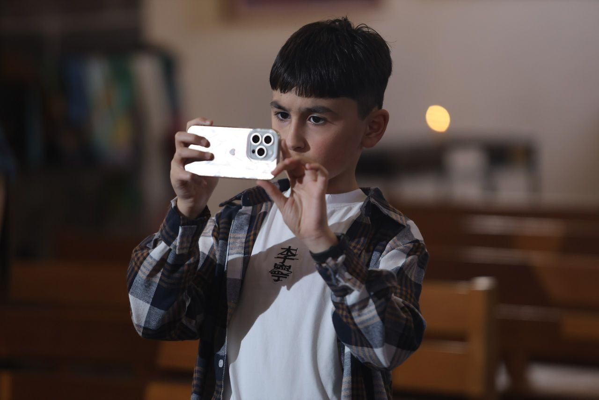

Who am I?
My name is Narek. I'm 13 years old, and I'm starting my own blog. I've tried doing this before, but unfortunately it didn't work out. I'm interested in pretty much everything. For example, I love writing music, discovering forgotten media and streaming via various plugins.
I won't forget my friends either! Most of my friends are digital — online acquaintances from all over the world. I don't just love them, I adore them. Since last year, I've been attending TUMO, where I've made lots more friends. It seems that almost all the coaches like me, though that's not certain!
As soon as I joined, I started learning robotics, filmmaking and programming with great enthusiasm. I've always loved doing these things. Recently, I passed the Goethe-Zertifikat A2 exam, which was a huge achievement for me. I hope you enjoyed my bio!
If you'd like to be friends, I'm open to it. I'm looking forward to meeting each and every one of you!
Bye!
BANGARANGA!